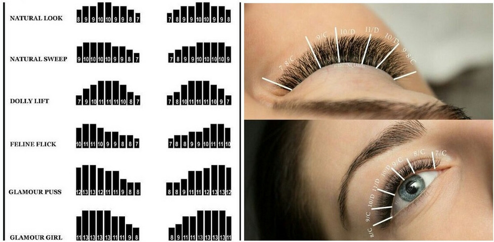

Все про наращивание ресниц для начинающих
Наращивание ресниц – это популярная косметическая процедура удлинения и увеличения объема натуральных (природных) ресниц, путем приклеивания синтетических волосков специальным клеем. Выполнять процедуру может косметолог, визажист или мастер-лашмейкер (lashmaker).
Длина наращенных ресниц варьируется от 6 до 16 мм, но для фантазийных образов могут использоваться и максимально длинные (до 21 мм). Мастер подбирает длину в зависимости от индивидуальных особенностей и пожеланий клиента. Можно нарастить ресницы разной длины и сделать их длиннее на внешнем углу века. Это придает взгляду дополнительную выразительность и корректирует разрез.
Классическая процедура наращивания начинается с внешнего угла века, и пореснично доходят до внутреннего края. При этом важно соблюдать одинаковый угол наклона.
Сеанс длится от 2 до 3,5 часов.
Срок носки: 4-6 недель. Срок зависит от клея, особенности ухода после процедуры, степени жирности кожи клиента и других факторов.
Коррекция: корректировать наращенные реснички можно после 2-й недели носки. Если все аккуратно, то коррекция может понадобиться только после 4-й недели, т.е. раз в месяц.
Для удачного результата важно правильно подобрать качественные материалы для наращивания ресниц, а также длину, толщину, изгиб и цвет. Искусственные ресницы производятся в широком ассортименте:
- Длина ресниц колеблется от 4 до 21 мм.
- Толщина – от 0,07 до 0,30 мм. В зависимости от диаметра, материалы условно делятся на «норку», «шелк» и «соболь».
- «Шелк» — самые тоненькие ресницы, их толщина 0,07-0,14 мм, приближённые к натуральным по толщине и структуре. Создают эффект естественного макияжа. Подходят для наращивания ресниц любых объёмов.
- «Норка» - более утолщенные, глянцевые и яркие. Толщина 0,15-0,20 мм. Создают объем, более выраженный эффект накрашенных ресниц (вечерний макияж).
- «Соболь» - имеют диаметр 0.21-0.30 мм, довольно толстые и упругие, подходят девушкам со своими сильными и густыми ресницами. Смотрятся ярко, но держатся намного меньше, чем шелк и норка.
- Цвет – основные черный и коричневый. Дополнительно - разноцветные ресницы любых оттенков (синие, зеленые, розовые, красные, оранжевые, фиолетовые, желтые, белые), в том числе двухцветные (черное основание и цветной кончик).
Как выбрать толщину ресниц для наращивания
Диаметр до 0,14 мм дают самый натуральный вид, прекрасный вариант на каждый день. Используются для классического наращивания.
0,15 мм – эффект хорошо накрашенных ресниц, делают ресницы толще и гуще, заменяют ежедневный макияж.
Кукольный эффект получается при наращивании ресниц диаметром от 0,2 мм. Чаще всего мастера комбинируют длину, чтобы сохранить природное очертание века. А вот комбинировать разный изгиб не стоит.
Другие эффекты: лисий, беличий, декоративный, миллениум и т.д.
! Стоит знать, что все ресницы производят из синтетических материалов не бывает из настоящего меха животных – норки или соболя. Это условные названия среди мастеров.
Синтетические ресницы обязательно проходят сертификацию и проверку на безопасность для человека. Современное производство позволяет создавать легкие, гибкие ресницы с эффектом памяти (восстанавливают свою форму после деформации). Они не вызывают аллергию и практически не ощущаются в носке.
Какие бывают изгибы ресниц
Изгиб корректирует форму и глубину взгляда. Основные виды изгибов:
- J – слабый, почти прямой, изгиб (для естественного эффекта);
- B – легкий завиток, естественный, более открытый эффект;
- C – средний завиток, один из самых популярных изгибов, дает эффект открытых, выразительных глаз;
- CC, D – супер изгибы, яркий гламурный эффект. Хорошо подходит клиенткам с опущенными веками, глубоко посаженными глазами или с ресницами, которые от природы растут вниз.
- U-образный изгиб – сильно изогнутый, для создания кукольного образа.
Также встречаются изгибы L, LC, LD – прямые волоски с изгибом на концах. Хорошо подходят девушкам с азиатским разрезом глаз (восточная внешность).
Схемы наращивания ресниц.
